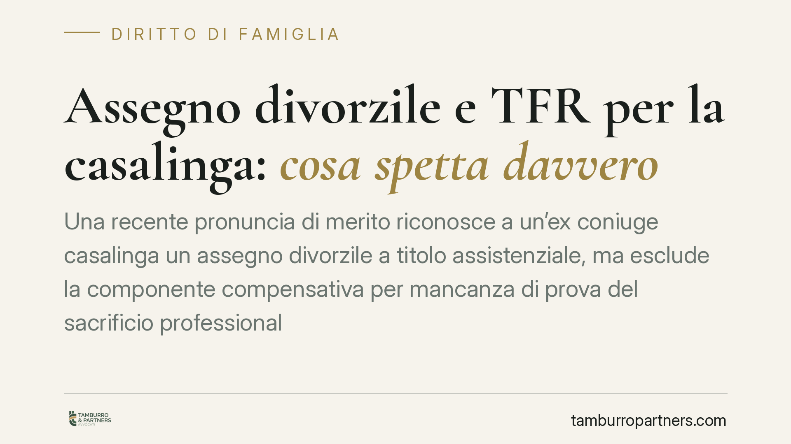

Assegno divorzile e TFR per la casalinga: cosa spetta davvero
Una recente pronuncia di merito riconosce a un'ex coniuge casalinga un assegno divorzile a titolo assistenziale, ma esclude la componente compensativa per mancanza di prova del sacrificio professionale e nega la quota di TFR del marito. Il caso offre l'occasione per chiarire come funzionano, davvero, i diritti economici dopo il divorzio e perché la documentazione conta più delle affermazioni.

Il caso
Un tribunale di merito si è pronunciato sulla domanda economica di un'ex moglie, casalinga durante l'intero matrimonio, nei confronti dell'ex marito, medico specialista. La donna chiedeva un assegno divorzile e una quota del trattamento di fine rapporto (TFR) del coniuge.
Il tribunale ha riconosciuto un assegno mensile di 1.000 euro, ma in sola funzione assistenziale. Ha escluso la componente perequativo-compensativa e ha negato il diritto alla quota di TFR.
Inquadramento normativo
L'assegno divorzile è disciplinato dall'art. 5, comma 6, della L. 898/1970. Le Sezioni Unite della Cassazione (sent. n. 18287/2018) hanno chiarito che l'assegno ha natura composita: assistenziale e perequativo-compensativa.
La funzione assistenziale mira a garantire un sostegno al coniuge privo di mezzi adeguati e nell'impossibilità di procurarseli. La funzione perequativo-compensativa riconosce, invece, il contributo dato dal richiedente alla formazione del patrimonio comune e personale dell'altro, nonché la rinuncia a occasioni professionali in ragione delle scelte condivise di conduzione familiare.
Il punto decisivo è che questa seconda componente non si presume: deve essere provata. Non basta affermare di aver sacrificato la propria carriera; occorre dimostrare l'esistenza di concrete opportunità professionali cui si è rinunciato e il nesso tra quella rinuncia e le scelte familiari.
Perché la componente compensativa è stata esclusa
Nel caso esaminato, il tribunale ha ritenuto che mancasse la prova di un effettivo sacrificio professionale. Non è emerso un percorso lavorativo o formativo interrotto, né un'occasione concreta abbandonata. In assenza di questi elementi, il giudice ha riconosciuto il solo profilo assistenziale, misurato sullo squilibrio reddituale tra i coniugi e sull'età della richiedente.
È una distinzione che pesa sull'importo. L'assegno meramente assistenziale tende a essere più contenuto rispetto a quello che integra anche la valorizzazione del contributo endofamiliare.
Il nodo del TFR
Il diritto a una quota del TFR dell'ex coniuge è previsto dall'art. 12-bis della L. 898/1970. La norma attribuisce al coniuge titolare dell'assegno divorzile, che non sia passato a nuove nozze, una percentuale pari al 40% del trattamento di fine rapporto riferita agli anni in cui il rapporto di lavoro è coinciso con il matrimonio.
Due presupposti vanno tenuti distinti. Primo: la quota si calcola sugli anni di sovrapposizione tra rapporto di lavoro e vincolo matrimoniale, non sulla data della domanda di divorzio. Secondo: il diritto presuppone la percezione del TFR da parte dell'altro coniuge. Finché l'indennità non viene liquidata, il diritto non è esigibile.
Nel caso in esame il tribunale ha negato la quota. La ricostruzione dei presupposti di fatto non consentiva di riconoscere il diritto nei termini richiesti. L'insegnamento operativo è che l'art. 12-bis non è un automatismo: richiede la verifica puntuale della titolarità dell'assegno, della durata della sovrapposizione e dell'effettiva percezione dell'indennità.
Implicazioni pratiche
Per chi ha dedicato gli anni del matrimonio alla famiglia, la pronuncia conferma che l'assegno non è precluso, ma che la sua misura dipende da ciò che si riesce a documentare. La funzione assistenziale resta ancorata allo squilibrio economico; quella compensativa richiede una prova rigorosa.
Sul versante TFR, la tempistica e le condizioni della norma incidono direttamente sui diritti connessi. La quota segue regole proprie, diverse da quelle dell'assegno, e va impostata con precisione già in sede di domanda.
Cosa fare in concreto
- Ricostruire il percorso professionale rinunciato o interrotto, raccogliendo documenti: proposte di lavoro, iscrizioni a corsi, titoli conseguiti e non spesi.
- Documentare il contributo alla vita familiare e alla formazione del patrimonio dell'altro coniuge, non limitandosi ad affermarlo.
- Verificare la durata della sovrapposizione tra rapporto di lavoro dell'ex coniuge e matrimonio, elemento che determina la quota di TFR.
- Accertare se il TFR sia già stato percepito o sia ancora in maturazione: da questo dipende l'esigibilità del diritto.
- Considerare che la tempistica della domanda incide sui diritti economici connessi, incluso il profilo del TFR.
Le valutazioni esposte dipendono dalle circostanze del singolo caso e dall'esito dell'istruttoria probatoria.
Ogni famiglia ha il suo equilibrio.
Separazione, divorzio, affidamento, assegno: se vuoi un confronto riservato su una specifica situazione, scrivi allo studio. Ti rispondiamo entro un giorno lavorativo.